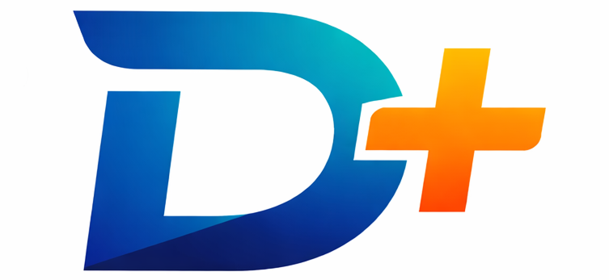

失敗談から学ぶ
教科書には載りにくい実体験を、次に活かせる知見として共有します。

Direction Plus お問い合わせINTRODUCTION
D+（ディープラス）は、「ディレクター」「ディレクション」の文脈を中心に、 実践的な知見や最新ノウハウを共有するために生まれた共同プロジェクトです。
ABOUT
現場の「悩み」とその「解決方法」を、机上の空論ではない生きたナレッジとして共有する。 それが D+ の中心にある考え方です。
教科書には載りにくい実体験を、次に活かせる知見として共有します。
最新の AI ツールを、ディレクションの現場でどう使うかまで具体化します。
異なるコミュニティや立場が交わることで、新しい視点と付加価値を生みます。
VALUE
導く力を共有し、迷いを減らす。
コミュニティや立場を越えて交わる。
これまでのディレクションに、AI や新しい視点を足す。
TARGET
これからディレクションを学びたい人
現場での進め方をもう一段深くしたい人
事業会社で外部との接点や視点を増やしたい人
ROADMAP
発足の経緯を共有しながら、5/11 セミナーの構成案を公開の場で詰めます。
テーマは「リアルな失敗談」。一次情報をベースに、学びを共有します。
公式 LINE やサイトの公開を進めつつ、事務局メンバーの拡充と第2回企画へつなげます。
TEAM

Web・IT企業の採用・組織支援と、3,000名+の対話実績を持つ。進行全体、告知、プロジェクト運営をまとめる。

ブランディング、サイト構想、ゲスト調整、クリエイティブ制作をリード。D+の見え方を形にする。

Webディレクター兼UXデザイナー。Web・情報設計とUXが主戦場で、場の進行と構成を整える。

合同会社ゆらり、DiSA会長、Adobe Community Expert。キャスティングやWeb制作を担当し、場づくりを支える。

ディレ協連携を担う。越境しながら、D+の接点を広げる。
CONTACT
オンラインセミナーや座談会の案内は、公開情報を順次追加していく前提で整えています。最新の動きはプロジェクト進行に合わせて更新します。